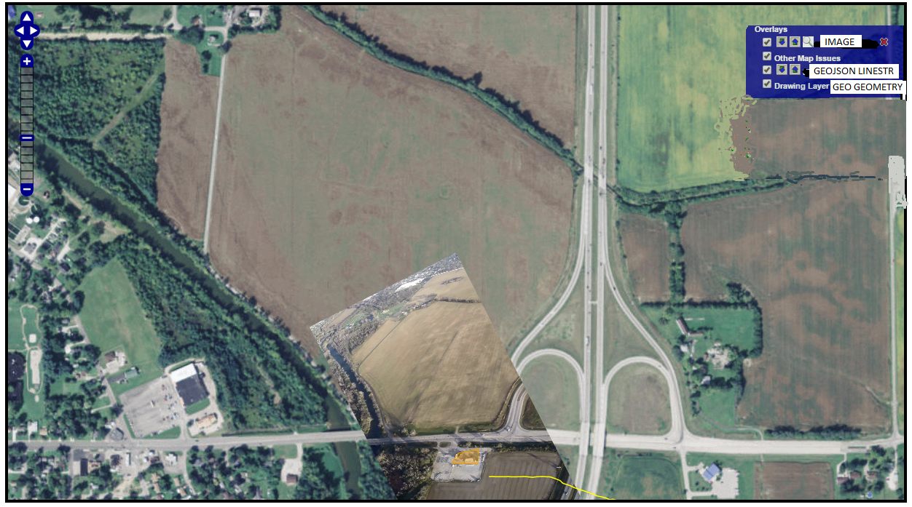

Requirements for Version 0.21
User must have option for displaying overlays, as shown in the image below.
Overlays contains 4 items.
- Image: this is the image uploaded by user. It is important to note that the current system attaches the uploaded image to the reporting name.
- Other Map Issues: Unknown at this time what this is.
- GeoJSON LineString: This is referencing company GeoJSON linestring objects.
- GeoJSON Geometry: The user edits of the map using drawing tools.
Current Map System
